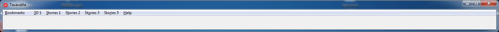
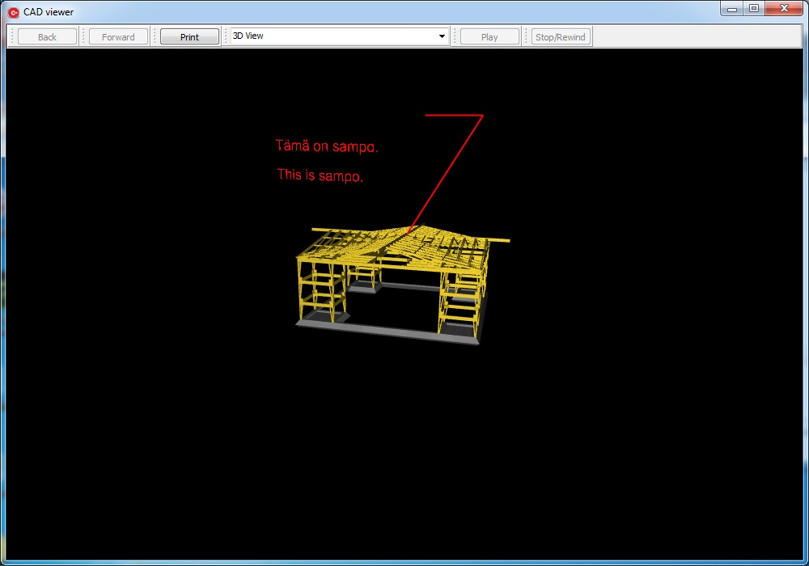
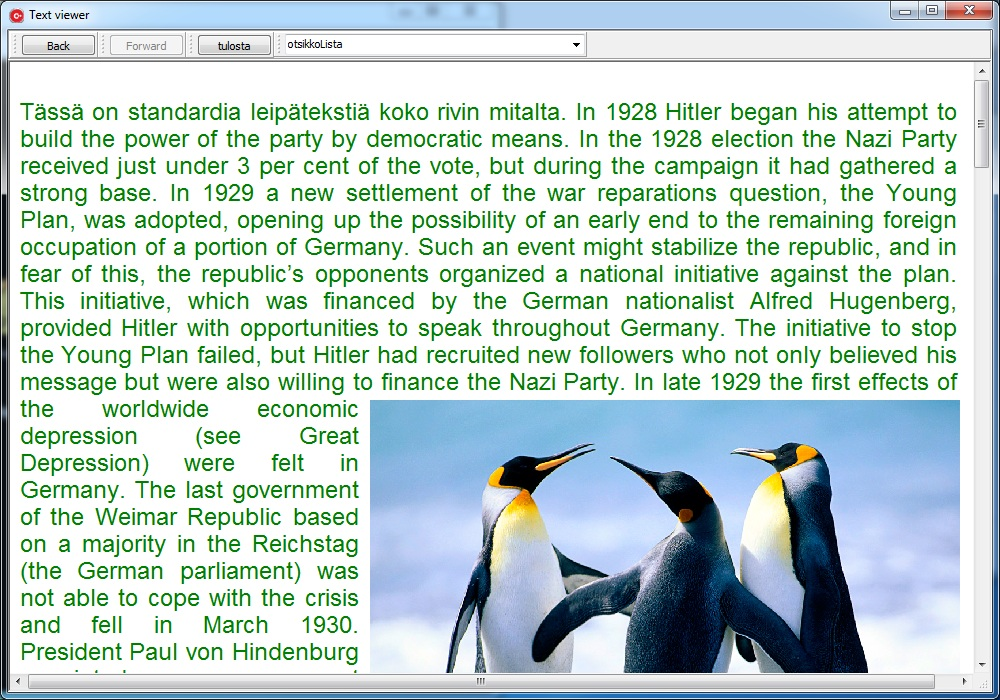
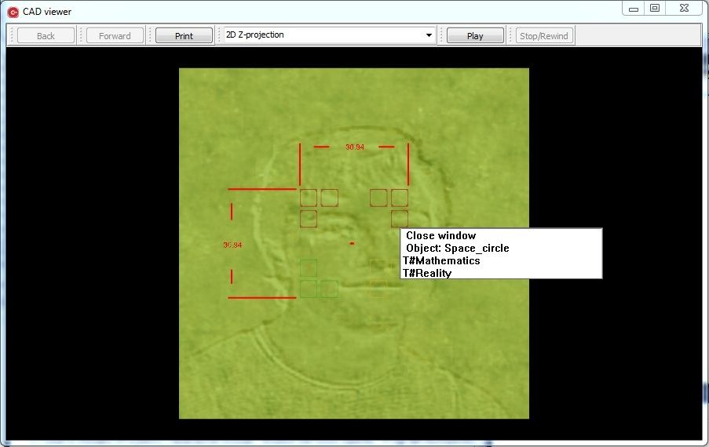

Tasavalta koostuu kolmesta eri ikkunasta. Hallintapalkista avataan tiedostoja ja hallitaan kirjanmerkkejä, johin voi tallentaa muistiin, mihin kohtaan viime kerralla ohjelmaa käyttäessä jäi:

CADruutu mahdollistaa kolmiulotteisen avaruuden tarkastelun:

Ja tekstiruudulta voi lukea html asiakirjoja:

Hallintapalkki on erittäin yksinkertainen käyttää. Se sisältää kaksi perusvalikkoa, Bookmarks ja Help valikot, joista Bookmarks sisältää käyttäjän kannalta hyödyllisiä aputoimintoja, sekä Help valikon josta löytyy linkki tähän tekstiin. Kaikki muut valikot, joita on vaihteleva määrä, sisältävät linkkejä joko .cad tai .html -päätteisiin tiedostoihin, joiden katselua varten tämä Tasavalta ohjelma on tehty.
Bookmarks sisältää toiminnot luoda, valita ja tuhota kirjanmerkkejä. Kirjanmerkin ideana on, että kun käyttäjä haluaa lopettaa Tasavalta ohjelman käytön, mutta palata joskus myöhemmin samaan kohtaan mihin edellisellä tai jollakin aiemalla lukukerralla lopetti, hän voi luoda kirjanmerkin ennen ohjelman sulkemista. Kirjanmerkit ovat numeoituna Bookmarks valikossa ikäjärjestyksessä ja käyttäjä voi luoda niitä maksimissaan 9 kappaletta. Jos käyttäjä luo enemmän kirjanmerkkejä, Tasavalta hävittää liiat kirjanmerkit ikäjärjestyksessä, vanhin kirjanmerkki ensin. Kirjanmerkkien lisäksi Bookmarks valikko sisältää toiminnot vaihtaa kieltä ja 3D grafiikan tasoa. CAD ruudulla näytettävä näkymä voi olla 'yksinkertainen', jolloin näkymän valaistus on staattinen, tai 'hienostunut', jolloin valaistus on dynaaminen ja jonka sujuva käyttö edellyttää suorituskykyistä tietokonetta. Kielen vaihto toimintoa ei ole vielä implementoitu.
CAD ruudussa olevassa alasvetopalkissa on luetteloitu kaikki esillä olevan virtuaalimaailman objektit sekä objektiryhmät, jotka erottaa objekteista asteriskimerkki *. Käyttäjä voi valita, mitkä objektit tai objektiryhmät ovat nähtävissä alasvetopalkin valintaruuduilla. Aivan ylimpänä valintaruudussa ei kuitenkaan ole listattuna objekteja tai objektiryhmiä, vaan esillä olevan virtuaalimaailman katselukulmat: jos virtuaalimaailma on kolmiulotteinen, valittavana on 3D perspektiivinäkymä sekä X-, Y- ja Z-akselin suuntaiset 2D ortografinäkymät. Mutta jos ruudulla näkyvä virtuaalimaailma on kaksiulotteinen, tarjolla on vain 2D ortografinäkymä.
Käyttäjän siirtäessä hiiren kursoria CAD ruudun näkymässä saattaa käydä, että jonkin objektin kohdalla kyseisen objektin väri muuttuu valkoiseksi, tai, jos se on lähtökohtaisesti valkoinen, punaiseksi. Tällöin kyseiseen objektiin liittyy linkki erilliseen .cad tai .html tiedostoon. Jos käyttäjä tällaisen objektin kohdalla klikkaa hiiren oikeaa nappia, avautuu pieni valikkoruutu, jonka listauksesta kyseisen linkin voi avata:

Tekstiruutu on internetselain, mutta offline sellainen: käyttäjä ei voi tehdä verkkohakuja eikä määrittää verkko-osoitetta, vaan ainoastaan klikata Hallintapalkin tarjoamia linkkejä. Teksti ruudussa voi olla käytössä rajaton määrä tekstidokumentteja yhtä aikaa, ja käyttäjä voi vaihtaa niiden välillä klikkaamalla Back ja Forward nappeja. Tekstidokumentteja voi tulostaa klikkaamalla Print nappulaa. Tekstidokumentin väliotsikot, jos sellaisia on, löytyvät alasvetovalikosta ja valikkoriviä klikkaamalla tekstinäkymä siirtyy kyseisen väliotsikon kohdalle. Tekstidokumentissa saattaa olla linkkejä, joita klikkamalla pääsee toisiin tekstidokumentteihin tai 3D virtuaalimaailmoihin.